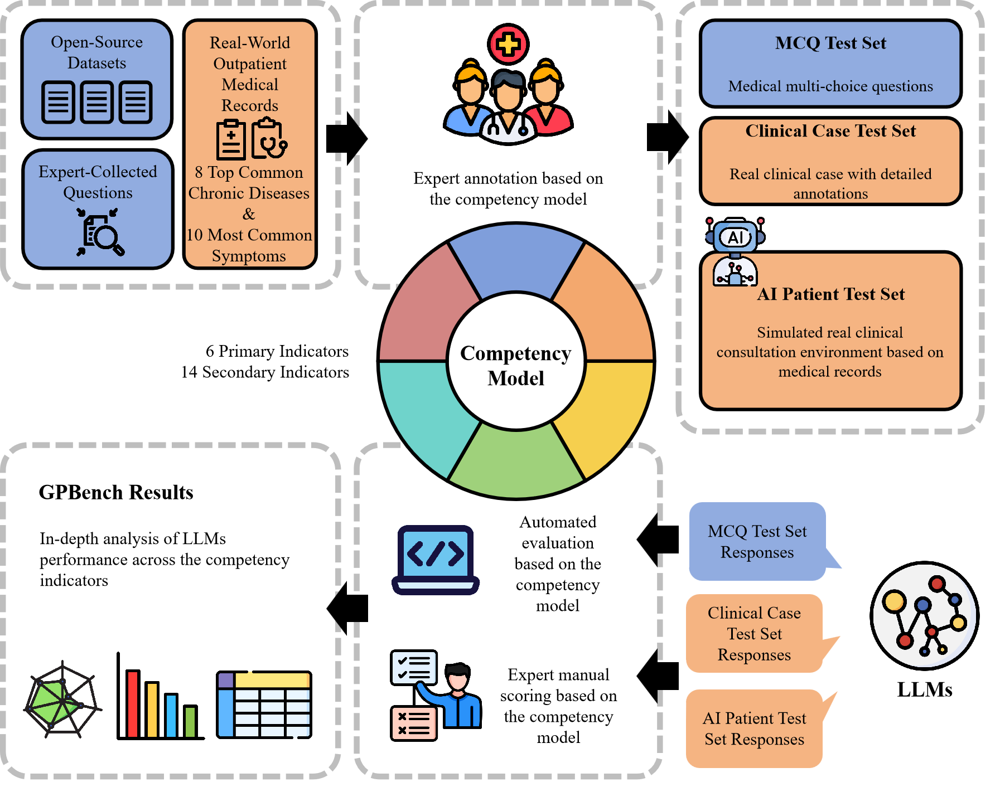
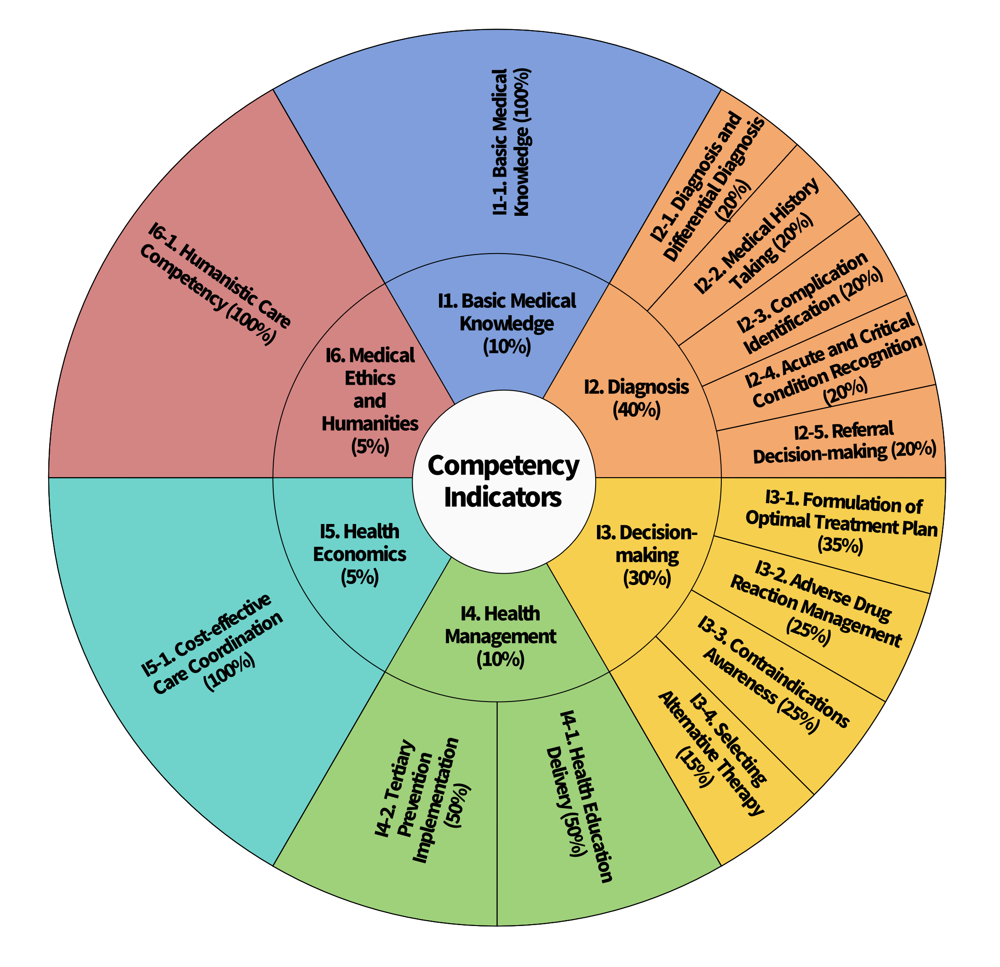

GPBench is a competency-based evaluation framework for assessing the capability of Large Language Models (LLMs) to function as general practitioners. Existing medical benchmarks primarily rely on exam-style questions or simplified question-answering formats, which lack a competency-based structure aligned with the real-world clinical responsibilities of general practitioners. GPBench addresses this gap by introducing a general practice competency model and an expert-annotated evaluation dataset constructed according to routine clinical practice standards.
The competency model covers six primary indicators with fourteen secondary indicators specifying measurable capabilities under each primary indicator. The evaluation dataset consists of three test sets: the Multiple-choice Question (MCQ) Test Set, the Clinical Case Test Set , and the AI Patient Test Set.
3,661 competency-tagged multiple-choice questions for evaluating foundational medical knowledge and theoretical understanding.
70 real-world outpatient records scored for diagnosis, treatment plan, and health education, covering eight common chronic diseases and ten frequent clinical symptoms.
70 simulated "AI Patient" agents assessing interactive medical history taking.

The evaluation framework of GPBench is grounded in a competency model tailored to the real-world responsibilities of general practitioners. Rather than focusing solely on exam-style medical knowledge, this model is designed to reflect the broader clinical capabilities required in primary care, including diagnosis, treatment decision-making, longitudinal health management, cost-aware care, and humanistic practice.
Specifically, the competency model comprises six primary indicators: Basic Medical Knowledge, Diagnosis, Decision-making, Health Management, Health Economics, and Medical Ethics and Humanities. These dimensions are further operationalized into 14 secondary indicators in the revised paper, enabling a fine-grained assessment of LLM performance across the key competencies expected in general practice.

The revised paper evaluates 10 representative LLMs, including general-purpose and reasoning-oriented systems, and compares them against human general practitioners grouped by clinical experience. MCQ performance is measured by accuracy, while the Clinical Case Test Set and AI Patient Test Set are scored by expert GPs using predefined rubrics.
Models include GPT-4o, GPT-4-turbo, o1-preview, Gemini-1.5-pro, Qwen2.5-7B-Instruct, Qwen2.5-72B-Instruct, Claude-3.5-Sonnet, DeepSeek-V3, DeepSeek-R1, and HuatuoGPT-o1-7B.
Three GP groups were evaluated: Group A with more than 10 years of experience, Group B with 5-10 years, and Group C with less than 5 years.
200 stratified MCQs were sampled for human evaluation, while all 70 clinical cases and 70 AI-patient consultations were evaluated for both humans and models.
The study shows that LLMs have matched or even surpassed human physicians in assessments of static knowledge, they still lag significantly behind in interactive and reasoning-intensive clinical tasks. Their strengths lie in factual recall and the clear articulation of information, yet they have not attained the practical competency level of even less experienced general practitioners in real-world diagnostic and patient-interview scenarios.
The results of human physicians and LLMs on the evaluation dataset.
| Human Physicians / Models | MCQ Test Set (accuracy %) |
Clinical Case Test Set (score) |
AI Patient Test Set (score) |
|---|---|---|---|
| Group A | 62.97 | 87.10 | 77.75 |
| Group B | 62.39 | 85.77 | 76.59 |
| Group C | 68.32 | 81.16 | 61.30 |
| GPT-4o | 71.80 | 76.02 | 51.09 |
| GPT-4-turbo | 60.79 | 71.07 | 42.06 |
| o1-preview | 79.16 | 74.24 | 55.20 |
| Gemini-1.5-pro | 68.22 | 76.46 | 47.10 |
| Qwen2.5-7B-Instruct | 69.63 | 68.63 | 37.13 |
| Qwen2.5-72B-Instruct | 78.13 | 72.79 | 44.01 |
| Claude-3.5-Sonnet | 58.13 | 73.42 | 53.67 |
| DeepSeek-V3 | 75.80 | 70.90 | 37.14 |
| DeepSeek-R1 | 82.74 | 81.80 | - |
| HuatuoGPT-o1-7B | 73.95 | 70.35 | 36.33 |
The accuracies (%) of LLMs on the MCQ Test Set across the secondary competency indicators.
| Primary Indicator | Secondary Indicator | Qwen2.5-7B-Instruct | Qwen2.5-72B-Instruct | GPT-4o | GPT-4-turbo | o1-preview | Claude-3.5-Sonnet | Gemini-1.5-pro | HuatuoGPT-o1-7B | DeepSeek-V3 | DeepSeek-R1 |
|---|---|---|---|---|---|---|---|---|---|---|---|
| I1. Basic Medical Knowledge (10%) | I1-1. Basic Medical Knowledge (100%) | 64.48 | 76.60 | 68.83 | 54.53 | 80.01 | 53.73 | 64.98 | 70.59 | 71.86 | 82.44 |
| I2. Diagnosis (40%) | I2-1. Diagnosis and Differential Diagnosis (20%) | 68.90 | 79.80 | 74.36 | 60.86 | 82.18 | 59.36 | 68.80 | 74.28 | 77.00 | 85.38 |
| I2-2. Medical History Taking (20%) | 71.82 | 79.82 | 77.45 | 59.27 | 85.45 | 61.09 | 68.55 | 74.18 | 80.00 | 85.82 | |
| I2-3. Complication Identification (20%) | 65.95 | 80.83 | 73.39 | 62.66 | 83.12 | 55.65 | 69.38 | 73.24 | 78.97 | 89.27 | |
| I2-4. Acute and Critical Condition Recognition (20%) | 77.68 | 82.90 | 82.32 | 63.77 | 86.38 | 59.13 | 69.28 | 82.03 | 82.03 | 87.54 | |
| I2-5. Referral Decision-making (20%) | 65.82 | 70.89 | 64.56 | 72.15 | 62.03 | 72.78 | 73.42 | 60.51 | 68.35 | 61.39 | |
| I3. Decision-making (30%) | I3-1. Formulation of Optimal Treatment Plan (35%) | 68.35 | 76.88 | 65.35 | 51.75 | 74.62 | 50.65 | 61.10 | 72.12 | 73.88 | 82.58 |
| I3-2. Adverse Drug Reaction Management (25%) | 66.86 | 77.71 | 69.71 | 58.86 | 75.43 | 48.57 | 63.43 | 75.43 | 74.86 | 80.57 | |
| I3-3. Contraindications Awareness (25%) | 59.31 | 74.83 | 69.66 | 46.55 | 81.38 | 48.97 | 64.48 | 67.59 | 76.55 | 82.76 | |
| I3-4. Selecting Alternative Therapy (15%) | 64.12 | 74.12 | 63.53 | 54.71 | 72.35 | 50.00 | 60.00 | 66.67 | 71.18 | 79.12 | |
| I4. Health Management (10%) | I4-1. Health Education Delivery (50%) | 74.34 | 78.11 | 77.36 | 72.08 | 86.04 | 68.68 | 76.23 | 76.89 | 76.60 | 84.53 |
| I4-2. Tertiary Prevention Implementation (50%) | 79.29 | 81.07 | 72.86 | 67.14 | 86.07 | 57.50 | 73.21 | 83.57 | 76.07 | 89.64 | |
| I5. Health Economics (5%) | I5-1. Cost-effective Care Coordination (100%) | 79.00 | 84.00 | 76.00 | 74.00 | 80.00 | 71.00 | 73.00 | 81.82 | 80.00 | 89.00 |
| I6. Medical Ethics and Humanities (5%) | I6-1. Humanistic Care Competency (100%) | 80.14 | 78.49 | 73.29 | 67.61 | 75.41 | 67.38 | 78.72 | 86.76 | 75.18 | 82.03 |
| Weighted Average | 69.63 | 78.13 | 71.80 | 60.79 | 79.16 | 58.13 | 68.22 | 73.95 | 75.80 | 82.74 | |
| STD | 1.40 | 1.28 | 1.38 | 1.45 | 1.27 | 1.47 | 1.41 | 1.34 | 1.32 | 1.20 | |
The performance (scores) of LLMs on the Clinical Case Test Set.
| Model | Diagnosis and Differential Diagnosis (I2-1) | Complication Identification (I2-3) | Acute and Critical Condition Recognition (I2-4) | Referral Decision-making (I2-5) | Formulation of Optimal Treatment Plan (I3-1) | Health Education Delivery (I4-1) | Weighted Average | STD |
|---|---|---|---|---|---|---|---|---|
| Qwen2.5-7B-Instruct | 63.36 | 62.00 | 80.86 | 75.71 | 56.60 | 82.07 | 68.63 | 16.26 |
| Qwen2.5-72B-Instruct | 67.57 | 60.36 | 88.14 | 74.14 | 66.43 | 87.71 | 72.79 | 17.18 |
| GPT-4o | 70.71 | 73.79 | 87.14 | 81.43 | 64.81 | 85.21 | 76.02 | 19.29 |
| GPT-4-turbo | 62.13 | 67.29 | 83.71 | 78.86 | 60.11 | 81.71 | 71.07 | 20.13 |
| Claude-3.5-Sonnet | 69.21 | 73.00 | 85.00 | 77.57 | 62.06 | 79.50 | 73.42 | 18.33 |
| Gemini-1.5-pro | 76.36 | 72.57 | 85.00 | 78.86 | 65.93 | 87.43 | 76.46 | 20.14 |
| DeepSeek-V3 | 63.14 | 69.29 | 83.57 | 74.00 | 59.79 | 84.00 | 70.90 | 21.93 |
| DeepSeek-R1 | 78.93 | 76.57 | 94.29 | 79.84 | 77.04 | 87.93 | 81.80 | 16.92 |
| HuatuoGPT-o1-7B | 52.79 | 70.29 | 87.86 | 72.14 | 60.00 | 89.43 | 70.35 | 19.88 |
| o1-preview | 67.64 | 68.86 | 85.71 | 85.29 | 61.09 | 85.00 | 74.24 | 20.26 |
Note. Eight common chronic diseases and ten frequent clinical symptoms were selected for case construction. For each disease or symptom category, 3--4 representative cases with varying difficulty levels were included to ensure broad coverage of typical general practice scenarios. As a result, the cases were distinct from one another, and LLMs were expected to exhibit heterogeneous performance across cases.
The performance (scores) of LLMs on the on the AI Patient Test Set.
| Model | Medical History Taking (I2-2) |
|---|---|
| o1-preview | 55.20 |
| Claude-3.5-Sonnet | 53.67 |
| GPT-4o | 51.09 |
| Gemini-1.5-pro | 49.57 |
| Qwen2.5-72B-Instruct | 46.18 |
| GPT-4-turbo | 44.90 |
| Qwen2.5-7B-Instruct | 40.22 |
| DeepSeek-V3 | 39.89 |
| HuatuoGPT-o1-7B | 36.87 |
| DeepSeek-R1 | - |
Beyond aggregate scores, we analyzed LLM responses on the Clinical Case Test Set to identify recurring competency gaps in real-world general practice scenarios. The analysis reveals that current LLMs still struggle to transform medical knowledge into safe, complete, and context-sensitive clinical decisions.
LLMs frequently failed to construct complete diagnostic reasoning chains, especially when cases required disease classification, multi-system assessment, or recognition of uncommon presentations.
Treatment planning remained a major weakness. Even when models produced broadly correct diagnoses, their management plans were often incomplete, unsafe, or insufficiently actionable for clinical use.
Medication-related errors were a particularly important source of clinical risk. These problems suggest that current LLMs do not yet reliably account for patient-specific conditions, disease stages, or drug safety constraints.
Although LLMs often generated fluent health education advice, their recommendations were frequently principle-based rather than concrete, individualized, and clinically actionable.
Key takeaway. The competency analysis shows that the main limitation of current LLMs is not simply insufficient medical knowledge. Rather, they struggle with the practical competencies required in general practice, including diagnostic stratification, complication screening, treatment goal setting, medication safety, non-pharmacological management, and responsible patient-centered care.
@article{li2026evaluating,
title={Evaluating clinical competencies of large language models with a general practice benchmark},
author={Li, Zheqing and Yang, Yiying and Lang, Jiping and Jiang, Wenhao and Chen, Junrong and Zhao, Yuhang and Li, Shuang and Wang, Dingqian and Lin, Zhu and Li, Xuanna and others},
journal={Nature Communications},
year={2026},
publisher={Nature Publishing Group UK London}
}